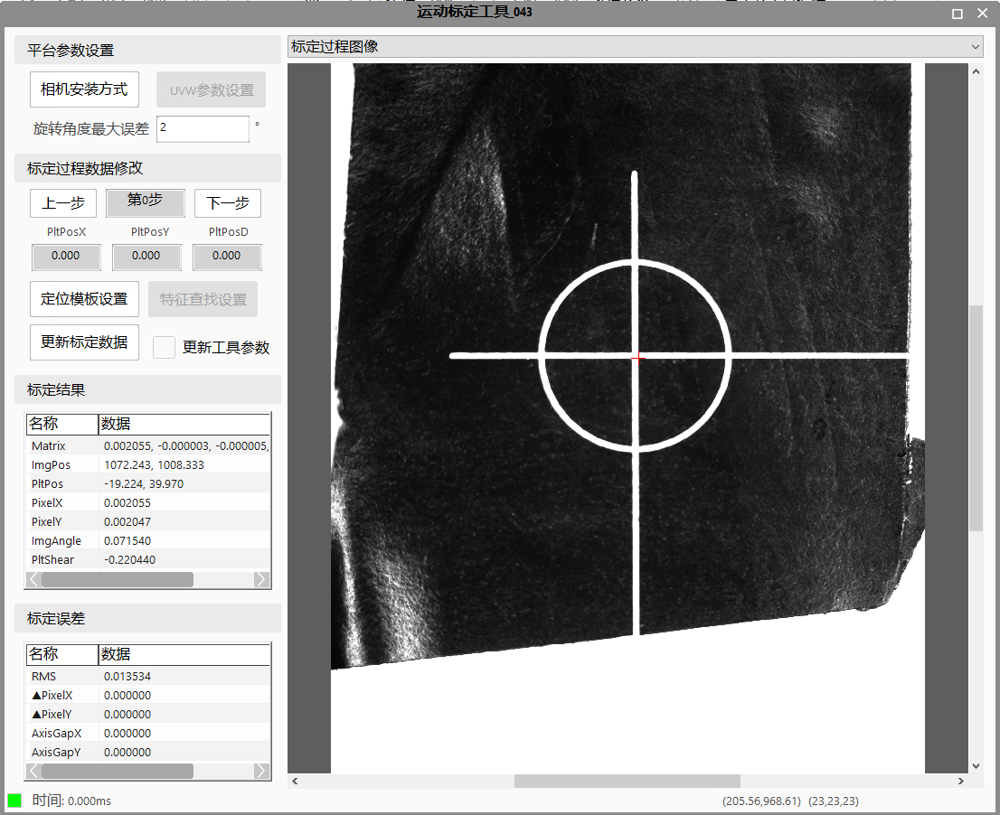

Công cụ này được dùng để hiệu chuẩn camera trên nền tảng chuyển động, có thể tính toán mối quan hệ giữa hệ tọa độ của camera và nền tảng, cũng như hệ số quy đổi pixel của camera. Việc hiệu chuẩn thường được chia thành hiệu chuẩn tịnh tiến và hiệu chuẩn xoay. Công cụ này hỗ trợ 6 loại nền tảng: XYD, XY, XD, YD, X, Y. Trong đó, các nền tảng XYD, XD, YD tích hợp cả hiệu chuẩn tịnh tiến và xoay, còn các nền tảng XY, X, Y chỉ thực hiện hiệu chuẩn tịnh tiến. Các loại nền tảng có thể được lựa chọn trong cửa sổ thuộc tính.
Trong quá trình hiệu chuẩn chuyển động, thông qua số bước hiệu chuẩn nhất định, có thể thu được vectơ tọa độ bao gồm tọa độ hình ảnh của điểm đặc trưng tại mỗi vị trí chụp. Vectơ tọa độ này cùng với bước di chuyển đã biết được dùng làm đầu vào cho công cụ hiệu chuẩn chuyển động, từ đó tính toán được mối quan hệ ánh xạ xoay và tịnh tiến giữa hệ tọa độ hình ảnh và hệ tọa độ của nền tảng.
Nền tảng điển hình là nền tảng XYD, quá trình hiệu chuẩn bao gồm 12 bước: tại mỗi vị trí đều thực hiện chụp ảnh định vị, kết quả định vị của 9 vị trí đầu tiên được dùng để tính toán hiệu chuẩn tịnh tiến, còn kết quả của 3 vị trí sau được dùng để tính toán hiệu chuẩn xoay, loại nền tảng được chọn là “XYD”; nếu là nền tảng XY thì quá trình hiệu chuẩn gồm 9 bước tịnh tiến; nếu là nền tảng XD/YD thì hiệu chuẩn gồm 6 bước (tịnh tiến + xoay); nếu là nền tảng X/Y thì quá trình hiệu chuẩn là 3 bước tịnh tiến.
Công cụ này nhập vào chỉ mục tọa độ cơ khí và giá trị tọa độ tương ứng tại mỗi vị trí.
Ứng dụng điển hình của công cụ này là nền tảng XYD (như tay máy, mô-đun, v.v.) dùng trong căn chỉnh hai hoặc ba camera để lấy và dẫn hướng chính xác. Nó tương thích với cả hai cách lắp đặt camera: cố định hoặc di chuyển theo. Các kịch bản hiệu chuẩn phổ biến bao gồm:
1) Camera được lắp cố định trên máy, và đầu cuối của cơ cấu chuyển động có thể di chuyển trực tiếp vào trong vùng nhìn của camera. Đầu cuối của tay máy/mô-đun (chẳng hạn như đầu hút/kẹp) sẽ gắp vật có đặc điểm cố định (như sản phẩm/mục tiêu) và di chuyển trong vùng nhìn của camera để hoàn thành hiệu chuẩn. Trong kịch bản này, loại hiệu chuẩn phổ biến nhất là hiệu chuẩn XYD;
2) Camera được lắp trên cơ cấu chuyển động như tay máy hoặc mô-đun. Một vật có đặc điểm cố định được đặt cố định trong vùng nhìn, và camera sẽ di chuyển nhờ cơ cấu chuyển động để thực hiện hiệu chuẩn. Loại hiệu chuẩn phổ biến nhất trong kịch bản này là hiệu chuẩn XY;
3) Camera được lắp cố định trên máy, nhưng đầu cuối của cơ cấu chuyển động không thể trực tiếp vào vùng nhìn của camera. Lúc này, cơ cấu chuyển động cần gắp một vật có chiều dài nhất định (thường là thanh kim loại, mục tiêu lớn, v.v.) để đưa đặc điểm cố định của nó vào vùng nhìn, hoàn thành hiệu chuẩn qua việc di chuyển. Trong kịch bản này, loại hiệu chuẩn phổ biến nhất cũng là hiệu chuẩn XY. Ghi chú: cũng có thể sử dụng “Công cụ hiệu chuẩn liên kết phổ dụng” để thực hiện liên kết đa điểm, chi tiết xem trong tài liệu hướng dẫn của công cụ đó.
Bản chất nền tảng UVW tương tự với XYD, có thể thực hiện chuyển động XYD trong hệ tọa độ thế giới. Tuy nhiên, cách thức hoạt động của nó là nhập một tập giá trị UVW vào hệ điều khiển để thực hiện chuyển động theo hướng XYD. Do đó, khi sử dụng nền tảng UVW để hiệu chuẩn, công cụ sẽ cần chuyển đổi nội bộ từ giá trị UVW sang XYD để hoàn thành hiệu chuẩn, và khi căn chỉnh, sẽ cần chuyển đổi ngược lại từ XYD sang UVW để thực hiện căn chỉnh.
Như hình trên cho thấy, đây là giao diện cấu hình tham số của công cụ đối với nền tảng UVW. Trong đó, các bước từ 1 đến 4 là các thông số đã được xác định từ nhà sản xuất. Người dùng chỉ cần cấu hình theo tài liệu hướng dẫn, sau đó dựa vào góc lắp đặt thực tế của nền tảng để thực hiện bước 5, từ đó hoàn tất thiết lập tham số cho nền tảng UVW.
Ghi chú: Sau khi nhấn nút “Xác nhận”, các thay đổi lần này mới có hiệu lực. Nếu nhấn “Hủy bỏ”, các thay đổi sẽ không có hiệu lực (chủ yếu để tránh việc người dùng không quen với nền tảng UVW vô tình thay đổi tham số khi chỉ muốn quan sát sự thay đổi của hình minh họa bên phải).
Hai hệ tọa độ nằm trên cùng một mặt phẳng có thể được chuyển đổi qua lại thông qua một quan hệ toán học nhất định. Công cụ hiệu chuẩn chuyển động sẽ thu thập tọa độ hình ảnh của N điểm Mark và các tọa độ cơ khí tương ứng, sau đó thực hiện tính toán toán học để xác định mối quan hệ chuyển đổi giữa hệ tọa độ hình ảnh và hệ tọa độ cơ khí. Nhờ đó, người dùng có thể chuyển bất kỳ điểm nào trong ảnh sang hệ tọa độ cơ khí. Mối quan hệ chuyển đổi này có thể được dùng cho các ứng dụng tiếp theo.

Loại nền tảng
Gồm 7 loại nền tảng: XYD, XY, XD, YD, X, Y, UVW. Khi thực hiện hiệu chuẩn, cần chọn loại nền tảng phù hợp với ứng dụng thực tế. Nếu cơ cấu chấp hành ở đầu có thể di chuyển theo 3 hướng XYD thì chọn loại XYD, lúc này thực hiện hiệu chuẩn với 12 bước; nếu chỉ có thể di chuyển theo 2 hướng XY thì chọn loại XY, lúc này di chuyển 9 bước; tương tự, loại X hoặc Y nghĩa là chỉ có thể di chuyển theo 1 hướng X hoặc Y, lúc này thực hiện hiệu chuẩn 3 bước.
Số lượng điểm hiệu chuẩn tịnh tiến
Có 2 lựa chọn là 9 điểm và 5 điểm, chỉ áp dụng cho các loại nền tảng XYD, XY và UVW. Dùng để xác định quỹ đạo di chuyển hiệu chuẩn theo phương X và Y, trong đó 9 điểm sẽ tạo thành quỹ đạo hình chữ “回”, còn 5 điểm là hình chữ “X” như hình dưới đây.

Có xuất vị trí di chuyển bước tiếp theo hay không
Khi hiệu chuẩn, cần điều khiển cơ cấu di chuyển Mark trong tầm nhìn của camera theo một quỹ đạo nhất định. Bộ điều khiển chuyển động có thể tự đặt vị trí chụp ban đầu và quỹ đạo tiếp theo, hoặc bên thị giác có thể tính toán vị trí bước tiếp theo dựa trên chỉ số hiện tại và bù trừ do người dùng thiết lập, và xuất ra trong danh sách đầu ra của công cụ.
Thu nhận ảnh
Khi thu ảnh, công cụ hỗ trợ hai chế độ: ảnh trực tuyến và ảnh ngoại tuyến. Nếu chọn ảnh ngoại tuyến, cần chỉ định đường dẫn thư mục ảnh; nếu chọn ảnh trực tuyến, cần chọn tên camera và xác định có sử dụng tham số độc lập hay không. Nếu có, cần thiết lập các tham số: phơi sáng, Gamma và độ lợi (gain).
Chế độ định vị Mark
Có 3 chế độ: chế độ thủ công, chế độ mã DM, và chế độ bia tiêu chuẩn. Nếu sử dụng vật thể tự chế (như sản phẩm) làm Mark thì chọn chế độ thủ công và chọn loại công cụ định vị (định vị hình học, định vị khu vực, v.v.), đồng thời xác định có bật công cụ tìm kiếm hay không tùy theo yêu cầu độ chính xác. Nếu sử dụng bia tiêu chuẩn (như bia tiêu chuẩn Lingyun) thì có thể chọn chế độ mã DM hoặc bia tiêu chuẩn. Khác biệt chính: - Trong chế độ mã DM, công cụ sẽ tự động định vị góc chuẩn tại gốc mã DM và dùng nó làm điểm Mark. - Trong chế độ bia tiêu chuẩn, công cụ tìm tất cả các góc bia chung trong ảnh và dùng chúng làm Mark để tính toán quan hệ giữa hệ tọa độ camera và hệ tọa độ cơ khí.
Giao diện thuộc tính công cụ như hình. Sau khi vào giao diện, cần nhấn “Thiết lập mẫu định vị”. - Nếu chọn chế độ thủ công, công cụ sẽ hiện cửa sổ thiết lập tương ứng với loại công cụ định vị. - Nếu chọn chế độ mã DM hoặc bia tiêu chuẩn, sẽ hiện cửa sổ thiết lập mã DM như hình dưới. Nếu không cài đặt gì thêm, công cụ sẽ dùng tham số mặc định.


Phương thức lắp đặt camera
Nhấn nút này để mở giao diện cấu hình lắp đặt camera. Người dùng chọn theo thực tế lắp đặt.
Thiết lập tham số UVW
Nhấn nút này sẽ mở giao diện thiết lập UVW đã giới thiệu trong chương 2. Người dùng có thể cài đặt các tham số liên quan đến nền tảng UVW tại đây.
Sai số góc quay tối đa
Nếu trong quá trình hiệu chuẩn, góc giữa 3 điểm Mark quay 3D vượt quá giá trị này thì hiệu chuẩn quay sẽ thất bại. Vì sai số góc ảnh hưởng lớn đến kết quả nên cần hạn chế.
Ví dụ: nếu đặt giới hạn là 1°, và quay theo chiều kim đồng hồ 3°, ngược lại 5°, góc giữa 3 điểm Mark lý thuyết là 174°. Nếu góc tính được từ ảnh vượt quá 1°, hiệu chuẩn sẽ thất bại.
Bước trước / Bước tiếp theo
Nhấn nút này để xem kết quả định vị Mark và giá trị tọa độ cơ khí nhận được của từng bước trong quá trình hiệu chuẩn, để xác nhận định vị và thu nhận dữ liệu có chính xác hay không.
Thiết lập mẫu định vị
Tùy theo loại chế độ định vị, giao diện công cụ định vị tương ứng sẽ hiển thị. - Với “chế độ thủ công”, sẽ hiện một trong các công cụ định vị: hình học / khu vực / hình học nâng cao / khu vực nâng cao. - Với “mã DM” hoặc “bia tiêu chuẩn”, sẽ hiện giao diện cấu hình mã DM.
Thiết lập tìm đặc trưng
Nếu chế độ định vị Mark là “thủ công” và đã bật công cụ tìm kiếm, nhấn nút này sẽ mở giao diện công cụ “Tìm nhiều vòng tròn & đường thẳng”, để người dùng thiết lập vị trí tìm vòng / tìm đường và cấu hình tập hợp điểm đầu ra làm điểm Mark.
Cập nhật dữ liệu hiệu chuẩn
Nếu phát hiện kết quả định vị của một bước có sai sót, có thể sửa lại mẫu định vị hoặc thiết lập tìm đặc trưng cho bước đó, sau đó nhấn nút này để cập nhật kết quả và tính toán lại.
Ví dụ: sau khi hoàn tất hiệu chuẩn (12 bước), khi xem lại thì phát hiện bước thứ 3 định vị không tốt do ảnh hưởng ngoại cảnh (như ánh sáng yếu ở biên ảnh), người dùng có thể tinh chỉnh riêng bước 3 (thu hẹp khung tìm kiếm, chỉnh tham số...), sau đó nhấn “Cập nhật dữ liệu hiệu chuẩn” để thay thế dữ liệu cũ và tính toán lại.
Cập nhật tham số công cụ
Khi chỉnh tham số định vị hoặc tìm đặc trưng (nhiều vòng tròn / đường thẳng) trong giao diện thuộc tính, các thay đổi chỉ áp dụng trong giao diện đó. Nếu muốn đồng bộ sang công cụ chính, cần đánh dấu “Cập nhật tham số mẫu” trước khi đóng giao diện nâng cao.
Ví dụ: lần đầu thêm công cụ, cần đồng bộ mẫu và tham số tìm đặc trưng thì phải đánh dấu tùy chọn này. Hoặc sau khi hiệu chuẩn, phát hiện mẫu cũ không phù hợp, người dùng cần sửa và đánh dấu rồi đóng giao diện để cập nhật. Tóm lại: nếu muốn áp dụng các thay đổi vào công cụ chính → đánh dấu khi đóng giao diện nâng cao; ngược lại thì không cần.
| Mô tả hiện tượng | Phương pháp giải quyết |
|---|---|
| Công cụ hiệu chuẩn không xuất ra kết quả hiệu chuẩn | Kiểm tra xem loại nền tảng được chọn có đúng hay không. Khi chọn nền tảng XYD, sẽ thực hiện hiệu chuẩn 11 bước (tổng cộng 12 vị trí). Các loại nền tảng khác tương tự. Nếu người dùng chọn sai loại nền tảng sẽ dẫn đến việc không thể xuất kết quả hiệu chuẩn chính xác. |
| Kết quả hiệu chuẩn bất thường | Vào giao diện thuộc tính, sử dụng nút “Bước trước” / “Bước tiếp theo” để xem kết quả từng bước hiệu chuẩn có xảy ra lỗi định vị Mark hay không. Nếu có lỗi, người dùng có thể điều chỉnh riêng tại vị trí đó. |
| Tên tham số | Giải thích tham số |
|---|---|
| Chỉ số tọa độ nền tảng | Xác định bước hiện tại trong quá trình hiệu chuẩn |
| Tọa độ X của nền tảng | Vị trí tuyệt đối trục X của cơ cấu chuyển động tại bước hiện tại trong quá trình hiệu chuẩn |
| Tọa độ Y của nền tảng | Vị trí tuyệt đối trục Y của cơ cấu chuyển động tại bước hiện tại trong quá trình hiệu chuẩn |
| Tọa độ D của nền tảng | Vị trí tuyệt đối trục D của cơ cấu chuyển động tại bước hiện tại trong quá trình hiệu chuẩn |
| Tọa độ U của nền tảng | Vị trí tuyệt đối trục U của cơ cấu chuyển động tại bước hiện tại trong quá trình hiệu chuẩn |
| Tọa độ V của nền tảng | Vị trí tuyệt đối trục V của cơ cấu chuyển động tại bước hiện tại trong quá trình hiệu chuẩn |
| Tọa độ W của nền tảng | Vị trí tuyệt đối trục W của cơ cấu chuyển động tại bước hiện tại trong quá trình hiệu chuẩn |
| Tên tham số | Giải thích tham số |
|---|---|
| Loại nền tảng | Loại nền tảng cần hiệu chuẩn hiện tại, hỗ trợ các loại XYD, XY, XD, YD, X, Y, UVW |
| Xuất vị trí bước tiếp theo | Chọn có hay không để công cụ này xuất ra vị trí di chuyển tiếp theo của robot |
| Bước X | Hiển thị khi “Xuất vị trí bước tiếp theo” là "Có", thiết lập bước hiệu chuẩn theo hướng X |
| Bước Y | Hiển thị khi “Xuất vị trí bước tiếp theo” là "Có", thiết lập bước hiệu chuẩn theo hướng Y |
| Bước D | Hiển thị khi “Xuất vị trí bước tiếp theo” là "Có", thiết lập bước hiệu chuẩn theo hướng D |
| Ảnh online | Chọn “Có” để sử dụng ảnh chụp từ camera, chọn “Không” để sử dụng ảnh offline từ tệp ảnh |
| Đường dẫn thư mục | Hiển thị khi “Ảnh online” là "Không", thiết lập đường dẫn đến ảnh offline |
| Tên camera | Hiển thị khi “Ảnh online” là "Có", chọn tên camera |
| Sử dụng tham số độc lập | Hiển thị khi “Ảnh online” là "Có", thiết lập có sử dụng tham số độc lập của camera hay không |
| Phơi sáng | Hiển thị khi “Sử dụng tham số độc lập” là "Có", thiết lập mức phơi sáng của camera |
| Gamma | Hiển thị khi “Sử dụng tham số độc lập” là "Có", thiết lập giá trị Gamma của camera |
| Gain | Hiển thị khi “Sử dụng tham số độc lập” là "Có", thiết lập độ khuếch đại (gain) của camera |
| Loại xoay | Thực hiện xoay ảnh thu được, phạm vi là 0, 90, 180, 270 độ, chỉ áp dụng trong chế độ online |
| Loại gương | Thực hiện gương ảnh thu được, phạm vi gồm: không, ngang, dọc, ngang+dọc, chỉ áp dụng trong chế độ online |
| Chế độ định vị Mark | Chọn loại định vị Mark, hỗ trợ ba chế độ: thủ công, mã DM, bia tiêu |
| Chọn công cụ định vị | Chọn công cụ định vị, hỗ trợ 4 loại: định vị hình học, định vị vùng, định vị hình học nâng cao, định vị vùng nâng cao (2 loại sau phụ thuộc vào quyền của USB bảo mật) |
| Bật công cụ tìm đường | Thiết lập có bật công cụ tìm đường (Line finding tool) hay không |
| Hiệu chỉnh méo ảnh | Hiển thị khi chế độ Mark là “bia tiêu”, thực hiện hiệu chỉnh méo ảnh đầu vào |
| Tên tham số | Giải thích tham số |
|---|---|
| Ảnh đầu vào | Ảnh xám thu từ camera hoặc tải từ tệp ảnh |
| Ảnh màu đầu vào | Ảnh màu thu từ camera hoặc tải từ tệp ảnh |
| Kết quả hiệu chuẩn | Mối quan hệ chuyển đổi giữa camera và cơ cấu chuyển động hiện tại |
| Tỷ lệ pixel bia tiêu | Khi sử dụng hiệu chuẩn bằng bia tiêu, đây là tỷ lệ pixel được tính từ hiệu chuẩn |
| Tập hợp điểm Mark hiệu chuẩn | Tập hợp điểm Mark trong suốt quá trình hiệu chuẩn |
| Tập hợp điểm Mark hiện tại | Tập hợp điểm Mark tại chỉ số hiện tại |
| RMS | Độ lệch RMS của kết quả hiệu chuẩn |
| Chỉ số tối đa | Giá trị chỉ số tối đa được hỗ trợ bởi loại nền tảng mà người dùng chọn, bắt đầu từ 0 |
| Vị trí X bước tiếp theo | Xuất vị trí trục X mà cơ cấu chuyển động cần đi tới nếu bật “bước tiếp theo” |
| Vị trí Y bước tiếp theo | Xuất vị trí trục Y mà cơ cấu chuyển động cần đi tới nếu bật “bước tiếp theo” |
| Vị trí D bước tiếp theo | Xuất vị trí trục D mà cơ cấu chuyển động cần đi tới nếu bật “bước tiếp theo” |
| Kết quả thực thi | Kết quả thực thi của công cụ |
| Thời gian thực thi | Thời gian thực thi của công cụ |
| Tên tham số | Giải thích tham số |
|---|---|
| Ảnh đầu vào | Ảnh xám thu từ camera hoặc tải từ tệp ảnh, giống với cửa sổ giám sát |
| Ảnh màu đầu vào | Ảnh màu thu từ camera hoặc tải từ tệp ảnh, giống với cửa sổ giám sát |
| Kết quả hiệu chuẩn | Mối quan hệ chuyển đổi giữa camera và cơ cấu chuyển động hiện tại, giống với cửa sổ giám sát |
| Tỷ lệ pixel bia tiêu | Khi sử dụng hiệu chuẩn bằng bia tiêu, đây là tỷ lệ pixel được tính từ hiệu chuẩn, giống với cửa sổ giám sát |
| Tập hợp điểm Mark hiệu chuẩn | Tập hợp điểm Mark trong suốt quá trình hiệu chuẩn, giống với cửa sổ giám sát |
| Tập hợp điểm Mark hiện tại | Tập hợp điểm Mark tại chỉ số hiện tại, giống với cửa sổ giám sát |
| RMS | Độ lệch RMS của kết quả hiệu chuẩn, giống với cửa sổ giám sát |
| Chỉ số tối đa | Giá trị chỉ số tối đa được hỗ trợ bởi loại nền tảng mà người dùng chọn, bắt đầu từ 0, giống với cửa sổ giám sát |
Tham khảo tệp “\Samples\应用案例\对位类项目\Mesh贴Box项目\Mesh贴Box工程.gvp” và tài liệu hướng dẫn tương ứng “应用案例\对位类项目\Mesh贴Box项目”。